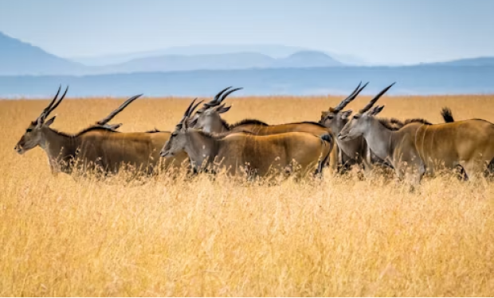

Explorando a Vida Selvagem
Um mergulho na naturezaA conservação da vida selvagem é uma prática essencial para proteger e preservar as espécies de animais e plantas em seus habitats naturais. Esta área de estudo e ação visa garantir a sobrevivência das espécies e a manutenção dos ecossistemas, que são fundamentais para o equilíbrio ambiental e a saúde do planeta.
A interação entre diferentes espécies cria um ciclo harmonioso de distribuição de nutrientes, controle de pragas e polinização das plantas, processos vitais para a vida na Terra.
As principais ameaças à vida selvagem incluem a perda de habitat, mudanças climáticas, caça e tráfico ilegal, poluição, espécies invasoras, fragmentação de habitats e doenças. A perda de habitat, em particular, é uma das maiores ameaças, resultante da expansão urbana, agricultura e desmatamento. As mudanças climáticas também afetam os habitats naturais, alterando as condições ambientais e forçando as espécies a se adaptarem ou migrarem.
Para combater essas ameaças, diversas estratégias de conservação são implementadas. A criação de áreas protegidas, como parques nacionais e reservas naturais, é uma das medidas mais eficazes. Essas áreas fornecem refúgios seguros para a fauna e flora, permitindo que as espécies se reproduzam e prosperem sem a interferência humana. Além disso, a restauração de habitats degradados e o manejo de espécies ameaçadas são ações cruciais para a conservação.
"Podemos julgar o coração de um homem pela forma como ele trata os animais."
Immanuel Kant
- A classificação biológica dos animais segue uma hierarquia de categorias taxonômicas, que vão do mais geral ao mais específico. Aqui estão as principais subdivisões:
- Reino > Filo > Classe > Ordem > Família > Gênero > Espécie
A educação e conscientização da sociedade também desempenham um papel vital na conservação da vida selvagem¹. Programas educativos e campanhas de sensibilização ajudam a informar o público sobre a importância da biodiversidade e as ameaças enfrentadas pelas espécies selvagens. Isso pode levar a mudanças de comportamento e apoio a políticas de conservação.
A pesquisa científica é fundamental para a conservação da vida selvagem, fornecendo dados e insights sobre as espécies e seus habitats. Estudos sobre comportamento, ecologia e genética das espécies ajudam a desenvolver estratégias de conservação mais eficazes e informadas. Além disso, o monitoramento contínuo das populações de vida selvagem permite avaliar o sucesso das medidas de conservação e ajustar as abordagens conforme necessário.
O desenvolvimento sustentável é outra abordagem importante, integrando a conservação da vida selvagem com o uso responsável dos recursos naturais. Projetos que promovem práticas agrícolas sustentáveis, manejo florestal e turismo ecológico podem beneficiar tanto a vida selvagem quanto as comunidades humanas. Isso cria um equilíbrio entre a preservação ambiental e o desenvolvimento econômico.
Em resumo, a conservação da vida selvagem é uma tarefa complexa e multifacetada que requer a colaboração de governos, organizações não governamentais, cientistas e o público em geral. Proteger a biodiversidade e os ecossistemas é essencial para garantir um futuro sustentável para todas as formas de vida na Terra.
